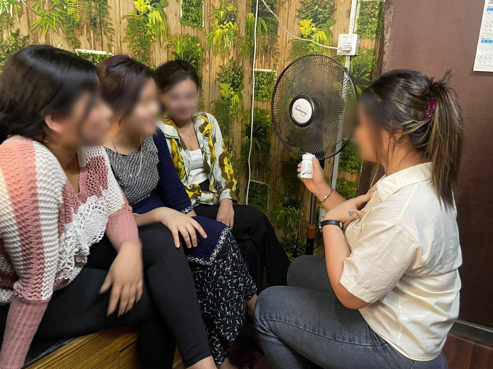
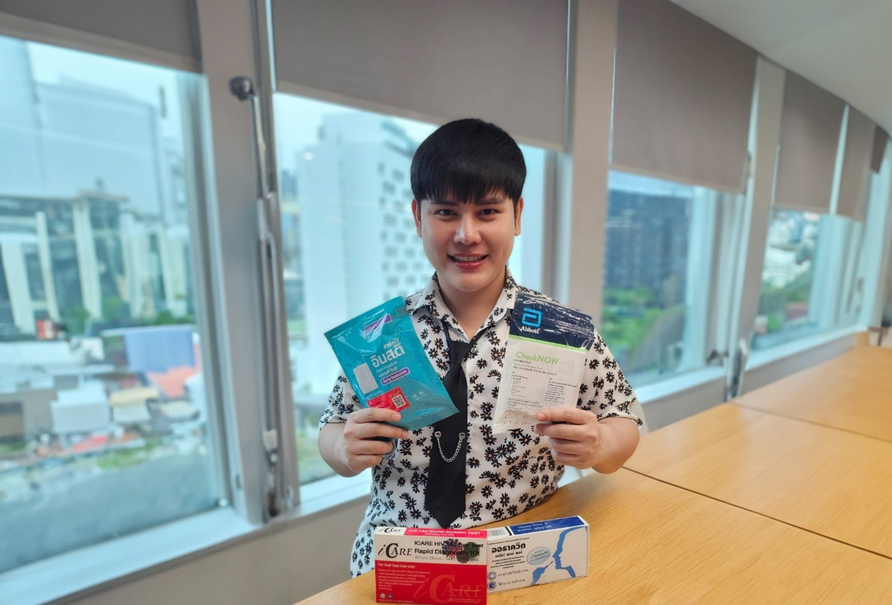
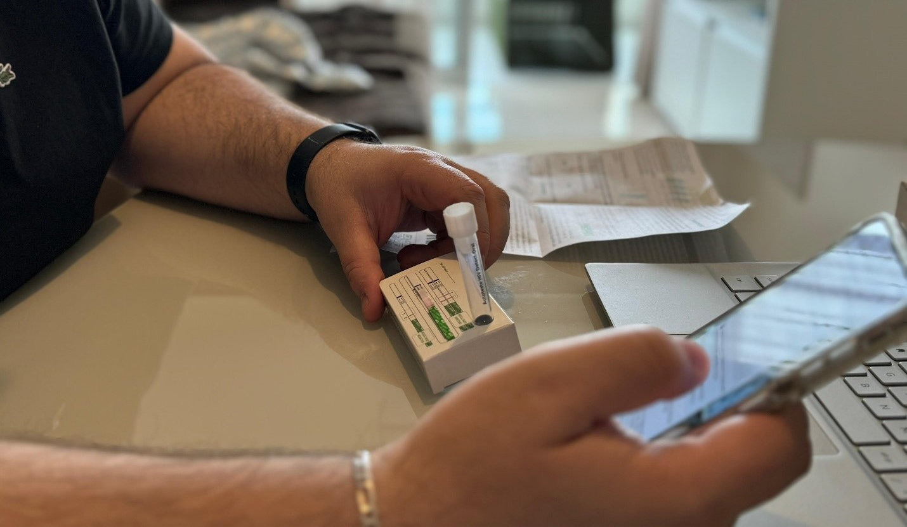
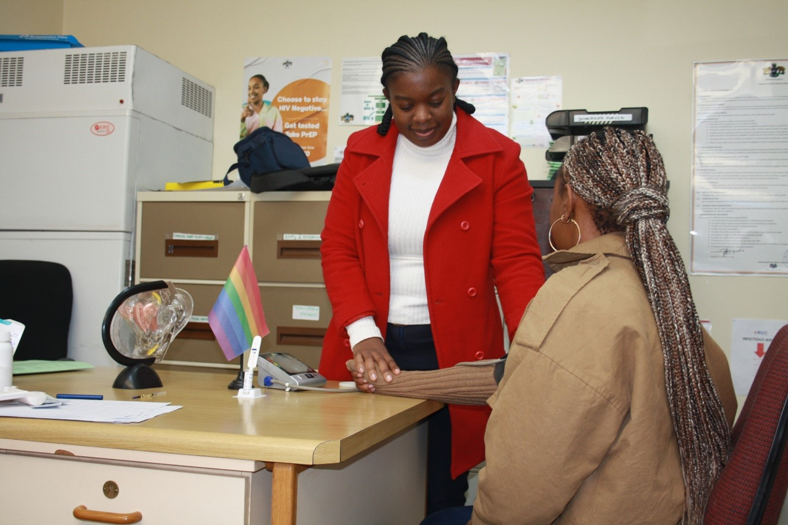
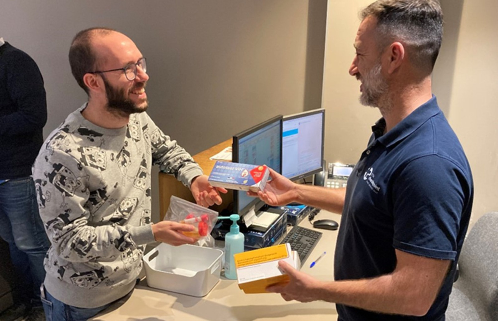

!9 July 2024
Self-testing was adopted very early in the HIV response and has ssince changed service delivery across many conditions and disease areas. While initially focused on enabling early diagnosis and treatment of people with HIV, new evidence has highlighted HIV self-testing (HIVST) as a tool to help prevent new infections.
Every year there are more than one million new and preventable HIV infections. Testing is essential to increase access to and make effective use of HIV prevention such as pre-exposure prophylaxis (PrEP) and post-exposure prophylaxis (PEP). Despite the strong evidence that PrEP and PEP prevent HIV acquisition, access is suboptimal. It is estimated that only 2.5 million people are taking PrEP, far fewer than the 10 million people needed to achieve global HIV prevention goals to have fewer than 370 000 infections by the end of 2025.
In its new HIV testing guidelines, WHO is calling for the expansion of HIVST to support the initiation, continuation, and re-starting of PrEP. HIVST can be integrated with various PrEP delivery methods, including oral PrEP and vaginal ring. Ongoing research is still needed to understand the role of self-testing within long-acting injectable PrEP. This strategy increases flexibility and access by streamlining service delivery, reducing testing requirements and clinic visits, and increasing convenience to suit client needs and preferences.
As WHO launches its updated guidelines, the following case studies from 5 countries underscore the potential for HIVST and PrEP integration and illustrate the different ways programmes successfully implement WHO recommendations.
The government of Nepal has rolled out HIVST and PrEP in facilities, communities and via virtual platforms in 6 provinces. Healthcare or community workers generally offer standard testing or self-testing, including online access options. All those reporting a negative self-test result and deemed eligible are offered PrEP. From January to December 2023, 11 841 HIVST kits were distributed and 96% had a negative result. Of these, 67% were successfully linked to PrEP services, significantly improving demand creation for PrEP. The national programme report of those with a positive self-test result shows that 95% are linked to antiretroviral therapy (ART) and 96% achieved viral suppression.
Gyani, a 28-year-old woman from Nepal’s Rautahat district, is a PrEP champion. She casually shows her peers her bottle and tells them how it is helping her to prevent HIV infection. In her reassuring voice she shares her PrEP and self-testing journey, encouraging other sex workers in her network to consider self-testing and accessing PrEP. Through this approach, Gyani has inspired more than 40 of her peers, at substantial HIV risk to self-test, enroll in and take PrEP. Gyani says that her transformation from a struggling single mother to confident PrEP champion who has helped to save her peers from HIV is not just the story of her personal triumph over fear and fear of stigma, but it is also about the importance of supporting access to stigma-free and person-centered services.
Gyani showing a bottle of PrEP during a health session. © Pabitra Thapa, EpiC USAID.
The Pribta Tangerine Clinic in Bangkok, operated by the Institute of HIV Research and Innovation (IHRI), offer tele-PrEP services which focus on reaching men who have sex with men and transgender women (age 18–35 years). Clients reporting a negative self-test result online are promptly initiated on PrEP without the requirement of further testing. The convenience and privacy have greatly reduced stigma and increased PrEP uptake, leading to a broader and more sustained HIV prevention effort in the region. As of March 2024, HIVST kits were distributed to 743 people, and out of all individuals reporting a negative self-test result, 40.8% engaged with PrEP online, with 53.8% initiating PrEP, 32.7% receiving a refill, and 13.6% restarting PrEP.
Pangpond, a 26-year-old gay man, saw an advertisement for an online PrEP service that used HIVST. As a former PrEP user, he was immediately attracted to the convenience it offered. He had started PrEP 6 months ago but found it difficult to make follow-up visits due to his busy work schedule. Now, he could use PrEP without the need to travel to the clinic, which he preferred. “I felt very confident going out and partying when I was on PrEP,” Pangpond shared. “But I just started a new job, and finding time to refill my PrEP was challenging. When I saw the ad for the online PrEP service I was interested right away. It was so simple. The clinic sent me the HIVST kit and I followed the instructions. I had to ask the clinic for advice online when I first used it, then I sent them the result, and they sent me PrEP to initiate. I followed the same steps to refill PrEP a month later. This was incredibly convenient, and I quickly regained control, feeling ready to enjoy life again.”
Pangpond, showing the HIVST kit. © Krittaporn Termvanich.
During the COVID-19 pandemic, Brazil authorized HIVST to maintain PrEP services for people with substantial HIV risk. The programme, in one of Brazil State Capitals, offers tele-PrEP with HIVST including re-initiation of PrEP and refills every 3 months and supports scheduling STI exams. As of March 2024, from close to 2400 people on PrEP in the program, 82.9% used TelePrEP and the number of people using PrEP grew by more than a quarter with 78.5% reporting effective PrEP use, demonstrating the effectiveness of the self-testing supported model.
Dr Ronaldo Zonta, medical coordinator at Florianópolis and direct implementor of Tele and Home PrEP, describes the importance of HIVST in PrEP services, ”The use of self-tests in restarting PrEP in remote services such as HomePrep is essential as it provides an alternative, practical, quick, and convenient approach for individuals who, for personal or lifestyle reasons, have stopped PrEP but find themselves at risk again and wish to resume it again quickly. The self-test, in this way, offers an agile, discreet, safe, and confidential solution, facilitating the restart of PrEP and ensuring the necessary follow-up for the user who wishes to use it as an additional tool to manage their risk of HIV infection.”
João Luis, a TelePrEP user, reported that the use of PrEP with HIVST has brought great benefits. “Self-testing is simple and quick, with clear instructions and results available in less than 20 minutes. This convenience ensures that tests are regular, protecting me against HIV. With a significant reduction in the time spent at health facilities, effectively using PrEP has become more convenient, with appropriate support from a team prepared to answer questions and monitor my health.” He added, “When they offered Home PrEP, I decided to try it because it was faster, more practical, and would streamline the whole process. I was skeptical, thinking it might not work and wouldn't save much time, but to my pleasant surprise, things went very well. The self-test is very easy to do—no mystery, the instructions are clear, it's practical, safe, and fast. “
João Luis, using HomePrEP service through “A Hora é Agora” Project (PEPFAR, CDC, ENSP/Fiocruz and local government partnership) carrying out an HIV self-test at home. © Ana Maria Bim Gomes
In Eswatini, community outreach workers deliver HIVST kits in hotspots and refer clients for additional services, where HIV-negative clients are offered PrEP. The government officially adopted HIVST to support PrEP use in 2024. Individuals eligible to start taking, or already taking PrEP are supported by receiving access to HIVST without further testing requirements. Individuals with a negative self-test result initiate PrEP immediately. Following PrEP initiation, individuals are offered a one-month supply of PrEP, followed by a three-month supply at the first follow-up and up to a six-month supply after four months. Clients also receive HIVST kits to retest to support PrEP continuation without the need for facility visits. Information and education to support self-testing is provided and available for all individuals.
Sandra, a 29-year-old woman, explains her experience with self-testing as part of taking PrEP. “This is a perfect arrangement. We were given an HIVST kit and directed to test in private. After self-testing negative, the nurse provided me with PrEP right away. Initially I wasn’t sure how to self-test but after the provider explained how to use the oral and blood-based (fingerprick) kits, I felt confident and took 2 tests kits for my partners so they could test themselves”.
Sandra receiving risk reduction counselling and interpretation of HIVST screening results. © Vusi Dlamini, FHI360/ EpiC USAID
In Mozambique, the Ministry of Health is implementing PrEP across 630 healthcare facilities and through mobile community clinics. HIVST is offered as an alternative to conventional testing for mobile and internally displaced populations, as well as stable users on PrEP, offering them the opportunity to continue with PrEP even when they cannot visit the health facility regularly. This strategic approach supports continuous PrEP use,as clients can choose to receive PrEP refills every six months and decide between clinic-based testing or using HIVST.
Pedro José António, a health supervisor of Gaza province in Mozambique has been involved in implementing HIVST for mobile populations using PrEP, said: “HIV self-testing has been crucial to our PrEP services. It allow us to demedicalize the service, letting people access important prevention services, outside of health facilities. This is especially important for mobile population, as they can keep up with PrEP without needing to visit a clinic. It has made our services much more accessible.”
Zelia Monica, a community counsellor working with Pedro talks about the positive impact of HIVST in her community: "As a community testing counselor, I've seen how HIV self-tests can really make a difference. For example, one man used a self-test I gave him, and the negative result encouraged him to keep using PrEP. Stories like this show me that self-tests help people stay informed about their HIV status and access other health services like PrEP. They truly make a positive impact in our community."
Zelia Monica, a lay counsellor who works with Pedro provides a HIVST demonstration to a mobile worker in Mozambique. © Tatiana Pinto, Ariel Foundation.
Barcelona Checkpoint, a sexual health clinic in Spain, provides HIVST to support PrEP continuation. The service allows eligible clients to replace 2 of their 4 annual check-ups with HIVST, called Express PrEP visits, following specific inclusion criteria. During these visits, clients receive HIVST kits with instructions to take the test and email a photo of the result for a nurse to review and record. They also collect their own samples for testing chlamydia and gonorrhea during these visits, ensuring comprehensive sexual health monitoring. PrEP is in high demand and the introduction of HIVST for continuation reduced staff workload, allowing more people to start and continue PrEP. Individuals taking PrEP have now 2 annual vists per year.
Erick, a BCN checkpoint client who opted into the Express PrEP programme, said “When they offered me this kind of follow-up and explained the reasons behind it, I said yes right away. I see it as a small action that can lead to other people feeling like I do, feeling better about their sexuality, and choosing freely what to do with it. It seems complicated, but it’s really not, and you can do it in the comfort of your own home. Testing yourself and collecting your own samples at home helps a lot. Everything is perfectly explained by the nurse when you do the complete blood test, and all the staff you see are informed on how to do it. It’s fast, reliable, and comfortable.”
Felix who provides PrEP at BCN checkpoint is cheerfully providing an HIVST kit, a PrEP refill and self-sampling collection containers to Erick during an “express PrEP visit”. © Lisandro Enrique Moisés.